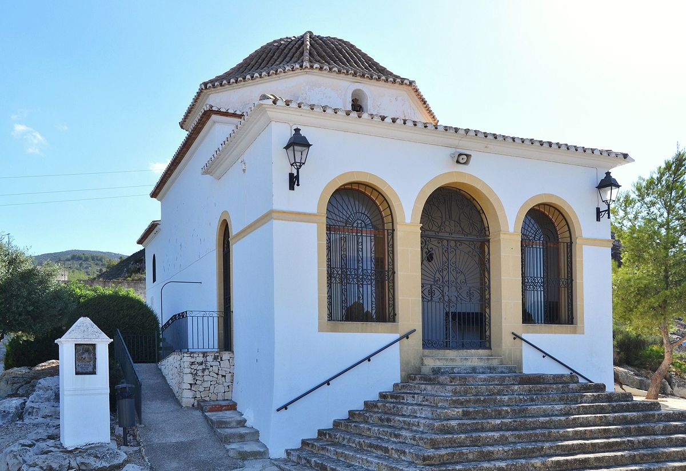

Pedreguer




Capilla de Sant Blai
La también llamada Capelleta de San Blas fue construida en la segunda mitad del S. XVIII y se sitúa en la parte alta del municipio. Estaba dividida en la nave y el camarín pero en 1892 se añadió el porche que cubre la entrada. Se han realizado varias restauraciones pero la última en 1992 a causa de un incendio. En esta capilla se celebran diferentes eventos festivos como son: San Antonio el 17 de enero con la bendición de los animales, San Blas el 2 y 3 de febrero con el Porrat, conciertos, bailes y el repique de la campanilla, y algunos actos religiosos en semana Santa.